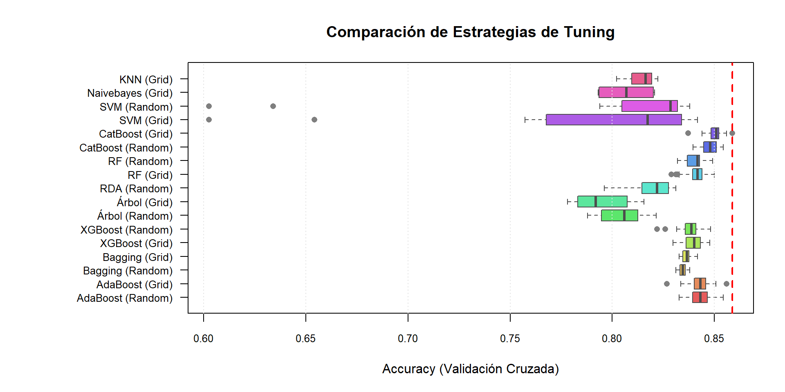

Actualmente, agencias como Standard & Poor’s (S&P) utilizan escalas complejas de múltiples niveles (desde AAA hasta D) para categorizar este riesgo [NO MENCIONA EL RIESGO]. Sin embargo, la alta granularidad de estas escalas puede dificultar la toma de decisiones ágiles. Por ello, este estudio tiene como objetivo simplificar dicha estructura mediante un modelo de clasificación supervisada que segrega a las empresas en dos categorías consolidadas: “Prime” (entidades con alta capacidad de pago y bajo riesgo) y “Subprime” (entidades con grado especulativo o mayor vulnerabilidad financiera), tomandolo como un primer filtro y plantear una estrategia diferenciada en cada categoria, considerando sus caracteristicas especificas.
Análisis Exploratorio y Preprocesamiento
Variable Objetivo
Variable
Descripción
Modos
categoria_riesgo
Clasificación binaria del riesgo crediticio de la empresa basada en la escala de S&P. Es la variable que el modelo buscará predecir.
• Prime: Calidad (AA- a BBB-) • Subprime: alto riesgo (BB+ hacia abajo)
Variables Numéricas I
Variable
Dimensión
Descripción Técnica
liabilities/assets
Solvencia
Ratio de Endeudamiento. Mide qué porcentaje de los activos totales está financiado por deuda (pasivos).
net_debt/EBITDA
Solvencia
Ratio de Cobertura de Deuda. Indica cuántos años tardaría la empresa en pagar su deuda neta utilizando su EBITDA actual.
EBITDA_margin
Rentabilidad
Margen EBITDA. Porcentaje de ingresos que se convierte en beneficio operativo antes de intereses, impuestos, depreciación y amortización.
ROA
Rentabilidad
Retorno sobre Activos (Return on Assets). Mide la rentabilidad generada por cada unidad de activo invertido.
ROE
Rentabilidad
Retorno sobre Patrimonio (Return on Equity). Mide la rentabilidad obtenida por los accionistas sobre su capital.
Variables Numéricas II
Variable
Dimensión
Descripción Técnica
current_ratio
Liquidez
Ratio Corriente. Capacidad de la empresa para cubrir sus deudas a corto plazo con sus activos a corto plazo.
quick_ratio
Liquidez
Prueba Ácida. Similar al ratio corriente, pero excluye los inventarios (activos menos líquidos). Es una medida más exigente de liquidez.
beta
Mercado
Beta de Mercado. Mide la volatilidad o riesgo sistémico de la acción en comparación con el mercado general.
ln_market_cap
Mercado / Tamaño
Logaritmo de la Capitalización de Mercado. Transformación logarítmica del valor total de las acciones de la empresa. Se usa como proxy del tamaño de la firma.
Variables Categóricas
Variable
Descripción
Modos
region
Región geográfica donde se encuentra la sede principal de la empresa
6
sector
Sector económico general al que pertenece la actividad principal de la empresa.
11
country
País de domicilio de la empresa.
52
industry
Industria específica dentro del sector.
72
Carga de Datos y librerías a usar
library(pacman) #para cargar varios paquetes con p_loadp_load(rio, tidyverse, tidymodels, corrplot, skimr, glue, gt, tictoc,ggplot2, treemapify, dplyr, tidyr, rpart, partykit, klaR, ranger,naivebayes, caret)#importe de datadata = rio::import("empresas_sp.xlsx")knitr::kable(head(data,3))
#Predecir en Testingpreds_test_rda <-predict(modelo_final_rda, testing_data)$class#Matriz de Confusiónconf_matrix_rda <-confusionMatrix(data = preds_test_rda,reference = testing_data$categoria_riesgo,mode ="everything",positive ="Subprime")print(conf_matrix_rda)
Confusion Matrix and Statistics
Reference
Prediction Prime Subprime
Prime 214 56
Subprime 26 151
Accuracy : 0.8166
95% CI : (0.7775, 0.8514)
No Information Rate : 0.5369
P-Value [Acc > NIR] : < 2.2e-16
Kappa : 0.6274
Mcnemar's Test P-Value : 0.001362
Sensitivity : 0.7295
Specificity : 0.8917
Pos Pred Value : 0.8531
Neg Pred Value : 0.7926
Precision : 0.8531
Recall : 0.7295
F1 : 0.7865
Prevalence : 0.4631
Detection Rate : 0.3378
Detection Prevalence : 0.3960
Balanced Accuracy : 0.8106
'Positive' Class : Subprime
Arboles
Función de K-fold Cross-Validation
CV_Kfold_Arbol <-function(data, formula, k =5, cp, minsplit) {set.seed(123) n <-nrow(data) folds <-sample(rep(1:k, length.out = n)) accuracies <-c()# Detectamos automáticamente el nombre de la variable Y desde la fórmula nombre_y <-all.vars(formula)[1]for (fold in1:k) { train <- data[folds != fold, ] test <- data[folds == fold, ]# Modelo rpart modelo <-rpart( formula,data = train,method ="class",control =rpart.control(cp = cp, minsplit = minsplit) )# Predicción preds <-predict(modelo, test, type ="class") acc <-mean(as.character(preds) ==as.character(test[[nombre_y]])) accuracies <-c(accuracies, acc) }return(mean(accuracies))}
Grid Search
grid_arbol <-expand.grid(cp =c(0.001, 0.01, 0.05, 0.1),minsplit =c(10, 20, 50))resultados_grid_arbol <-data.frame()for (i in1:nrow(grid_arbol)) { cp_i <- grid_arbol$cp[i] ms_i <- grid_arbol$minsplit[i]# Llamar a tu función mejorada acc_i <-CV_Kfold_Arbol(training_data, form, k =5, cp = cp_i, minsplit = ms_i)# Guardar resultados resultados_grid_arbol <-rbind(resultados_grid_arbol,data.frame(cp = cp_i,minsplit = ms_i,accuracy = acc_i))}# Ver el mejormejor_arbol_grid <- resultados_grid_arbol[which.max(resultados_grid_arbol$accuracy), ]print(mejor_arbol_grid)
cp minsplit accuracy
10 0.01 50 0.8155543
Random Search
# Definir número de iteraciones (modelos a probar)n_iter <-20set.seed(999)# Generar combinaciones aleatoriasrandom_grid_arbol <-data.frame(cp =runif(n_iter, min =0.0001, max =0.05), # Probamos CP muy pequeños a medianosminsplit =sample(5:50, n_iter, replace =TRUE), # Mínimo observaciones por nodoaccuracy =NA)for (i in1:nrow(random_grid_arbol)) {# Extraer parámetros de la fila cp_i <- random_grid_arbol$cp[i] ms_i <- random_grid_arbol$minsplit[i]# Llamar a tu función CV (usando la versión corregida que te pasé) acc_i <-CV_Kfold_Arbol(data = training_data, formula = form, k =5, cp = cp_i, minsplit = ms_i )# Guardar resultado random_grid_arbol$accuracy[i] <- acc_i}# Seleccionar el mejor resultadomejor_random_arbol <- random_grid_arbol[which.max(random_grid_arbol$accuracy), ]print(mejor_random_arbol)
Confusion Matrix and Statistics
Reference
Prediction Prime Subprime
Prime 208 48
Subprime 32 159
Accuracy : 0.821
95% CI : (0.7823, 0.8555)
No Information Rate : 0.5369
P-Value [Acc > NIR] : < 2e-16
Kappa : 0.6382
Mcnemar's Test P-Value : 0.09353
Sensitivity : 0.7681
Specificity : 0.8667
Pos Pred Value : 0.8325
Neg Pred Value : 0.8125
Precision : 0.8325
Recall : 0.7681
F1 : 0.7990
Prevalence : 0.4631
Detection Rate : 0.3557
Detection Prevalence : 0.4273
Balanced Accuracy : 0.8174
'Positive' Class : Subprime
XGboost
Preparación
library(xgboost)# preparando la variable objetivoy_label <-as.numeric(data$categoria_riesgo) -1#model.matrix convierte region y sector a dummies (one-hot)X_mat <-model.matrix(form, data = data)[, -1]#matriz puramente numericadim(X_mat)
Confusion Matrix and Statistics
Reference
Prediction Prime Subprime
Prime 212 45
Subprime 28 162
Accuracy : 0.8367
95% CI : (0.7991, 0.8698)
No Information Rate : 0.5369
P-Value [Acc > NIR] : < 2e-16
Kappa : 0.6697
Mcnemar's Test P-Value : 0.06112
Sensitivity : 0.7826
Specificity : 0.8833
Pos Pred Value : 0.8526
Neg Pred Value : 0.8249
Precision : 0.8526
Recall : 0.7826
F1 : 0.8161
Prevalence : 0.4631
Detection Rate : 0.3624
Detection Prevalence : 0.4251
Balanced Accuracy : 0.8330
'Positive' Class : Subprime
Comparación de Modelos
Boxplots de Accuracies durante la calibración de hiperparámetros

Comparación de metricas
Comparación de Rendimiento de Modelos (Métricas en Test)
Modelo
Accuracy
Kappa
Sensitivity
Specificity
Precision
F1_Score
Accuracy…1
CatBoost
0.8367
0.6697
0.7826
0.8833
0.8526
0.8161
Accuracy…2
XGBoost
0.8300
0.6560
0.7729
0.8792
0.8466
0.8081
Accuracy…3
logit
0.8233
0.6426
0.7681
0.8708
0.8368
0.8010
Accuracy…4
SVM
0.8210
0.6382
0.7681
0.8667
0.8325
0.7990
Accuracy…5
Random Forest
0.8210
0.6384
0.7729
0.8625
0.8290
0.8000
Accuracy…6
Bagging
0.8188
0.6333
0.7585
0.8708
0.8351
0.7949
Accuracy…7
Árbol
0.8188
0.6328
0.7488
0.8792
0.8424
0.7928
Accuracy…8
AdaBoost
0.8166
0.6284
0.7488
0.8750
0.8378
0.7908
Accuracy…9
RDA
0.8166
0.6274
0.7295
0.8917
0.8531
0.7865
Accuracy…10
KNN
0.8054
0.6021
0.6715
0.9208
0.8797
0.7616
Accuracy…11
Naive Bayes
0.7987
0.5905
0.7005
0.8833
0.8382
0.7632
Conclusiones
Con base en los resultados obtenidos en el conjunto de prueba (Test), se concluye que el modelo ganador es CatBoost. Este algoritmo demostró la mayor capacidad predictiva, alcanzando un Accuracy de 83.67%. Su superioridad se confirma al analizar otros indicadores robustos como el Índice Kappa (0.6697) y el F1-Score (0.8161), lo que indica que es el modelo que mejor equilibra la precisión y la sensibilidad global.
Respecto al orden de desempeño (ranking), los modelos que siguieron al líder fueron, en segundo lugar, XGBoost (Accuracy 83.00%) y, en tercer lugar, la Regresión Logística (Logit) (Accuracy 82.33%). Cabe destacar que, aunque modelos complejos como Random Forest o SVM tuvieron un rendimiento competitivo, quedaron ligeramente por debajo de la tríada ganadora (CatBoost, XGBoost y Logit) en las métricas generales
Además de identificar el modelo con mejor desempeño, este estudio permitió determinar las variables con mayor poder discriminante para la clasificación. En primer lugar, destacó el ln_market_cap, evidenciando que la valoración de mercado (tamaño de la empresa) es el predictor más influyente. En segundo lugar se posicionó el Beta, lo que subraya que la sensibilidad y correlación con el mercado (riesgo sistemático) es un determinante crítico en la evaluación. Finalmente, el ROE figuró como un tercer factor relevante; si bien su impacto fue menor al del tamaño y el riesgo, su presencia confirma que la rentabilidad operativa sigue aportando información valiosa al modelo